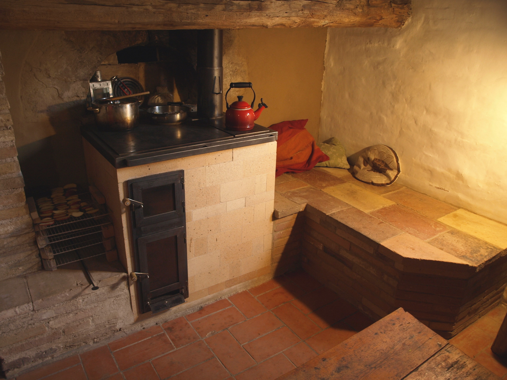
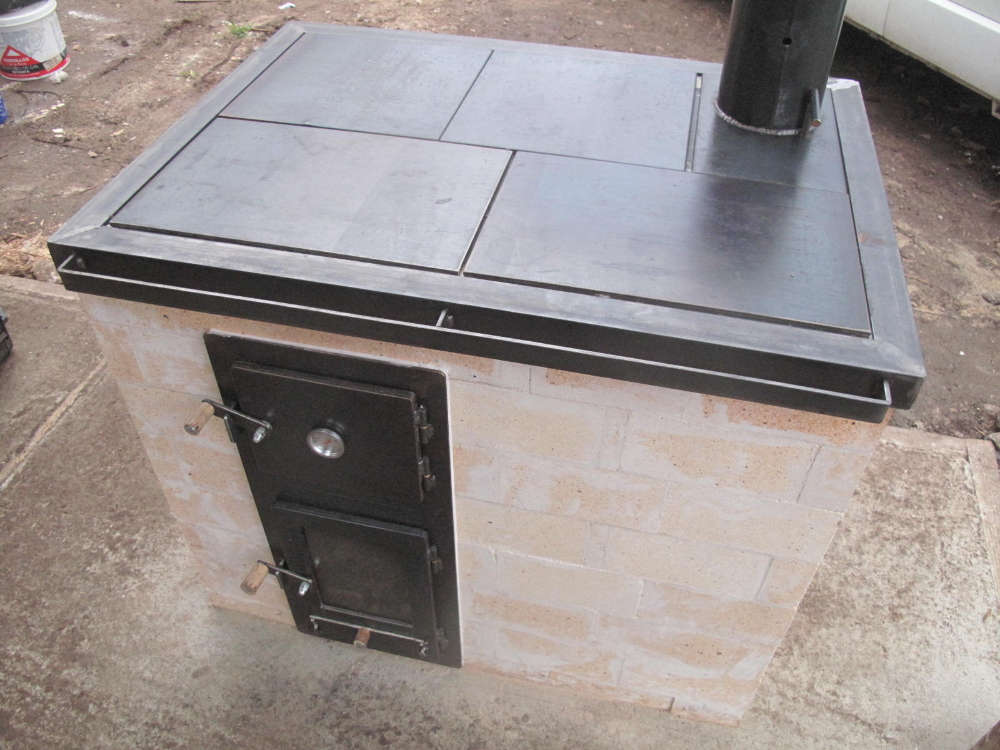
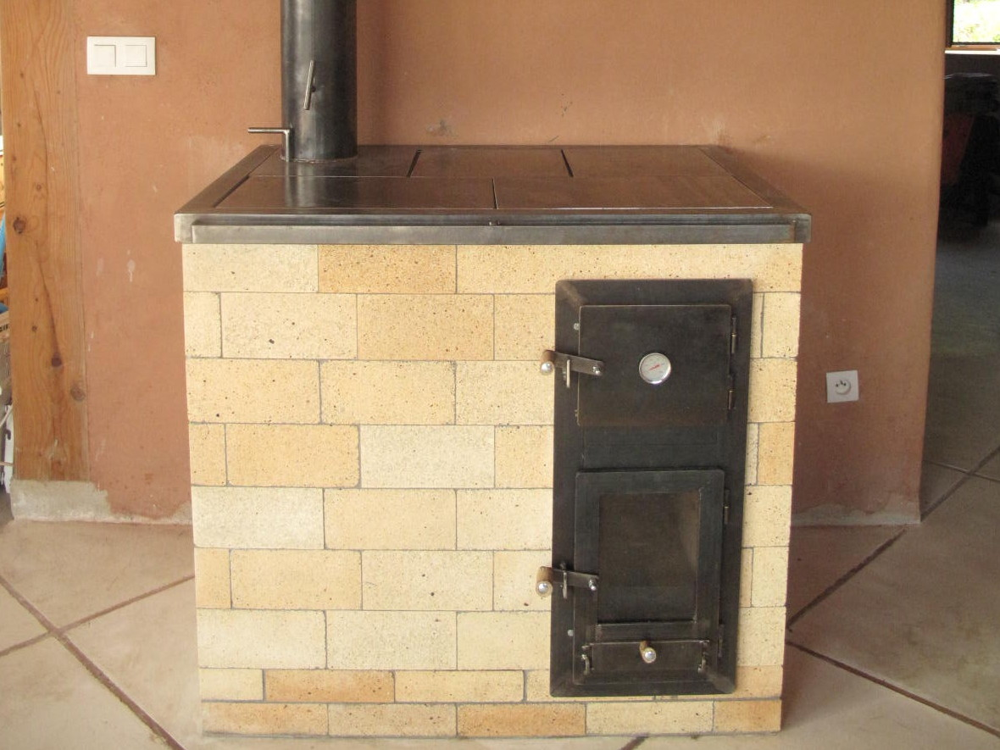
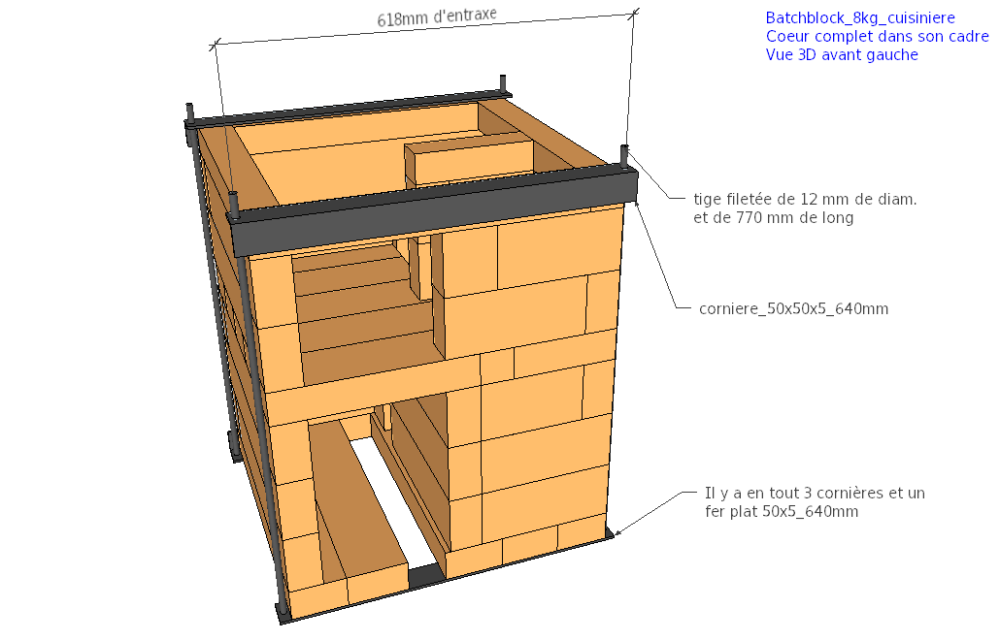
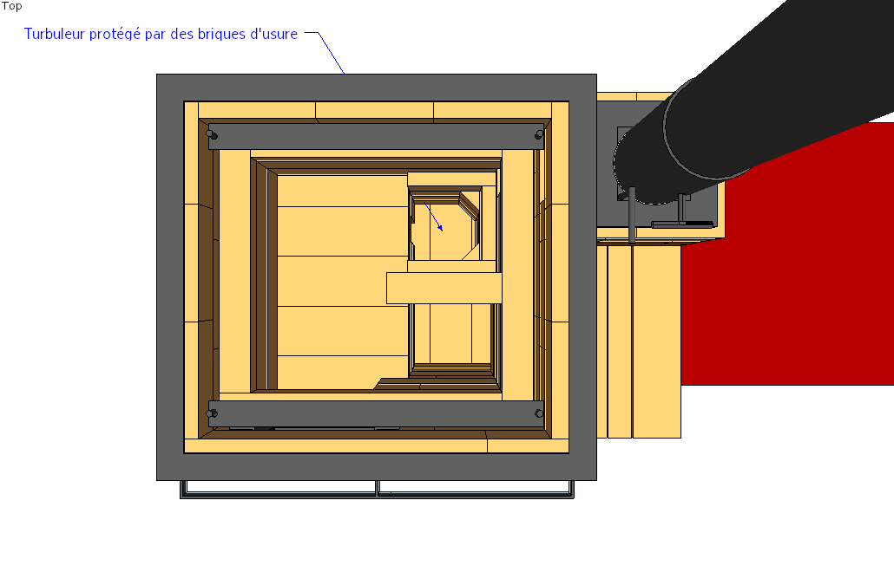

Les plans > La cuisinière de masse V5
Dernière modification le 11 Juin 2018.
Article en cours de mise à jour !
Introduction
Une cuisinière de masse c'est fantastique !
Elle peut servir à la fois de moyen de chauffage et de cuisson exclusif à une famille pendant l'hiver.. C'est un intermédiaire entre un poêle de masse purement rayonnant et un poêle en fonte dégageant beaucoup de chaleur par convection. Elle est beaucoup plus réactive qu'un poêle de masse classique, mais en contre partie l'inertie est diminuée et la convection augmentée.
La cuisson sur plancha (contact métal/métal) est d'une redoutable efficacité par rapport à une gazinière (contact gaz/métal) : la cuisson peut commencer 5-10 minutes après un allumage par le bas (plus long dans le cas d'un allumage par le haut). La température maximale sur la plancha est de 400°C. Les températures ne sont pas homogènes sur l'ensemble de la plancha, ce qui permet de gérer très finement la température de cuisson en déplaçant simplement la casserole.
Le four noir est utilisable plusieurs heures après la flambée. Il monte à 500°C pendant la flambée, 300°C juste après et la température diminue tranquillement par la suite. Le foyer sert de four d'appoint. Contre les parois du poêle on peut disposer des claies pour séchers des légumes et des fruits.
L'utilisation d'été est possible, mais dans ce cas il faut garder le clapet de démarrage ouvert en permanence pour compenser la faiblesse de tirage estivale.
{kind=link}
Vue 3D de la cuisinière de masse V5.
Mise à jour du 07 Avril 2018 :
La cuisinière de masse a été construite pendant le stage du 21 au 25 Mars 2018.
Cuisinière de masse V5 construite à Varaire pendant le stage du 21 au 25 Mars 2018.
Résultats :
Esthétiquement, nous sommes ravis : les jeux de volume entre la cuisinière, le décroché et le banc sont beaux. Le banc a été maçonné rapidement avec des briques réfractaires et des linteaux, mais d'autres matériaux sont tout à fait possibles.
Fonctionnement excellent, mis à part quelques points qui, une fois résolus, amèneront à une V6 stable :
- Le déflecteur n'est pas suffisant pour empêcher le flambement de la tôle. Nous allons tester une tôle en fonte de 8 mm à la place de la tôle d'acier OU nous reviendrons à la tôle percée de la Version 2.
- Le cadre en tiges filetées oblige à laisser 5 cm de jeu au sommet du poêle (pour les écrous). À cet endroit il n'y a pas de double peau et les briques du dernier rang de l'habillage sont sollicitées trop fortement. Nous allons passer sur un cadre complet en fer plat et cornières dans lequel nous maçonnerons le coeur de chauffe.
- L'extraction de chaleur est plus efficace que prévu. La taille du banc va être réduite.


Cuisinière de masse V5 construite à Varaire pendant le stage du 21 au 25 Mars 2018.
Voici une vidéo réalisée pendant la construction :
Vidéo de la cuisinière de masse V5 pendant une flambée.
La version 6 est en cours de conception et les plans actuels sont disponibles sur ces liens :
Fiche technique :
- Chargement de bois : 8 kg
- Puissance : 3200W avec 3 flambées par jour
- Poids (avec la métallerie, sans le banc de chauffe) : environ 900 kg
- Charge sous le poêle (sans compter le banc): 1160 kg/m2 soit 0,012 MPa ou 0,12 bar
- Diamètre minimal du conduit de raccordement : 150 mm
- Hauteur minimale de la cheminée d'évacuation : 4-5 m
- Nombres de dévoiements : 2 dévoiements au maximum (soit une seule partie non verticale) et dont la pente n'excède pas 45°
- Dimensions : 1070x725mm au sol (sans le banc) et 86 cm de haut
- Temps de travail sur chantier (estimé, hors métallerie, hors fumisterie) : 70 à 100h
- Section du système : 21400 mm2
- SIA de la cuisinière sans le banc et sans conduit de raccordement : 2 m2
- SIA à ajouter à la cuisinière : 2 m2 maximum
- Version : 5
- Date de publication initiale : 14 Mars 2018
- Date de la dernière modification : 14 Mars 2018
- Fichier Sketchup V2016 : cuisiniere_de_masse_V5_031718.skp
- Fichier Sketchup V8 : __
- Position de la cheminée d'évacuation : cuisiniere_de_masse_V5_031618_position_cheminee_evacuation.png
- Débit : debit_cuisiniere_de_masse_V5_031618.txt
- Manuel d'auto-construction en .pdf : manuel_cuisiniere_de_masse_V5_031718.pdf
- Manuel d'utilisation
{kind=link}
Versions précédentes :
Photos :
-

- 
- 
- 
Les 4 versions précédentes de la cuisinière de masse.
Évolutions :
- Version 1 :
- Rocket stove de 180 mm de diamètre semi-enterré
- Hauteur totale de 95 cm
- Briques de terre crue et mortier de terre
- Plancha de 3 mm (!) renforcée par une structure en cornières, mais sujette au flambement.
- Version 2 :
- Batchrocket sans "cheminée interne"
- Hauteur totale de 89 cm
- Chargement par lot, beaucoup plus de puissance
- Clapet de démarrage très efficace
- Plancha en tôle de 8 mm avec une "couronne" pour gérer les dilatations
- Briques réfractaires
- Coulis réfractaire à l'argile
- Simple peau
- Banc de chauffe
- Version 3 :
- Batchrocket avec turbuleur en demi-octogone
- Hauteur totale de 85 cm
- Double peau autour du foyer, simple peau dans les autres parties
- Briques d'usure dans le turbuleur
- Pas de banc de chauffe
- Plusieurs planchas pour gérer les flambements
- Coulis réfractaire silicaté : REFRACOL 240
- Portes plus larges avec un meilleur système de fixation
- Cheminée d'évacuation complètement en tube métallique et à part de la maçonnerie, ce qui évite les jeux de dilatations
- Version 4 :
- Foyer décalé pour avoir un four noir profond (54 cm)
- "Coup de sabre" volontaire entre le foyer et le turbuleur pour tenir compte des dilatations différentes
- Récupération de la chaleur par des colonnes internes
- Version 5 :
- Coeur de chauffe en linteaux pour éviter les points de fragilité et maçonner plus rapidement
- Cadre métallique serré autour du coeur de chauffe pour limiter la dilatation (donc le cisaillement des joints) et maintenir la fonctionnalité du poêle même si les joints se brisent
- Double peau complète, sauf pour le banc de chauffe
- Banc de chauffe
- Plancha avec déflecteur pour gérer les flambements
- Cheminée d'évacuation maçonnée complètement à part du reste de la maçonnerie, ce qui évite les jeux de dilatations
Images :
- 
- 
Cette cuisinière est équipée du nouveau coeur de chauffe renforcé : le Batchblock
Vidéos :
Vidéo de présentation de la version 2.
Vidéo sur l'analyse de combustion de la version 2.
Les matériaux et prix :
1. La commande à effectuer chez le briquetier :
Les prix affichés ici sont les prix (pour 2018) du briquetier PRSE avec lequel nous travaillons. Nous ne prenons aucune marge sur les articles ci-dessous. Vous pouvez très bien commander vos briques chez un autre fabricant. Cependant, les briques de PRSE sont utilisées par beaucoup de poêliers car elles sont d'extrèmement bonne qualité. C'est de plus une entreprise locale implantée en Drôme.
Attention, les matériaux nécessaire à la réalisation du banc de chauffe ne sont pas inclus !
| Désignation | Nombre | Prix unitaire TTC | Prix TTC |
|---|---|---|---|
| Brique de 220x110x60 mm, 40% d'alumine | 160 (19 briques supplémentaires sont incluses) | 1,69€ | 270,4€ |
| Brique de 220x110x30 mm, 40% d'alumine | 15 (3 briques supplémentaires sont incluses) | 1,04€ | 15,6€ |
| Linteau 600x110x60 mm, 40% d'alumine | 35 (1 linteau supplémentaire est inclus) | 9,78€ | 342,3€ |
| Coulis réfractaire REFRACOL 240, par seau de 25 kg | 2 | 39,14€ | 78,28€ |
| Laine céramique Superwool 607HT, 128 kg/m3, 1000x610x13 mm | 2 m | 9,48€ | 18,96€ |
| Palette perdue houssée 100x120 cm | 1 | 21,6€ | 21,6€ |
| Total, sans livraison | 747,14€ |
La livraison pour cette cuisinière nécessite une palette. Les tarifs (HT) de livraison depuis l'usine du briquetier PRSE sont donnés ici : Tarif_Transport_2018_PRSE.pdf. Pour une palette, ils varient entre 150 et 250€ TTC en fonction du lieu de livraison. Des frais supplémentaires s'appliquent dans les zones particulières (haute montagne, monaco, corse, etc..).
Une option pour que le briquetier découpe les briques en usine sera proposée prochainement.
2. La métallerie :
Les différents éléments de la métallerie pour la cuisinière de masse V5 sont les suivants :
- Clapet de démarrage
- Clapet d'obstruction
- Arrivée d'air secondaire "Cobra"
- Porte du foyer (vitrée) avec arrivée d'air
- Porte du four (non vitrée)
- Double cadre pour la porte du four et du foyer
- Cornières de fixation du cadre
- Plancha
- Cadre de la plancha
- Barre de protection
Les prix donnés sont des prix négociés. N'espérez en aucun cas obtenir des bons prix chez un négoce de fer sans négocier ! Demandez avant tout un devis et faites la commande pour l'ensemble du poêle. Attention les profilés métalliques sont vendus en barre de 6m.
Les fournisseurs pour les thermomètres et les vitres réfractaires sont indiqués dans l'article Matériaux et fournisseurs.
| Désignation | Nombre/dimension | Prix |
|---|---|---|
| Tôle de 5 mm : 290x600, 255x205, 145x140, 146x146 | 20€ | |
| Cornière de 50x50x5 mm | 8830 mm | 44€ |
| Fer plat de 50x5 mm | 1270 mm | 6€ |
| Tiges filetées diamètre 12 mm, longueur 770 mm | 4 unités | 12€ |
| Tôle de 8 mm | 750x700 mm | 70€ |
| Fer plat de 30x5 mm | 800 mm | 3€ |
| Tube carré de 60x60x2 mm | 510 mm | 5€ |
| Tube carré de 40x40x2 mm | 85 mm | 2€ |
| Té de 40x40x5 mm | 1395 mm | 9€ |
| Paumelles MAROC de 60x10 mm | 4 unités | 8€ |
| Thermomètres à tige | 2 unités | 20€ |
| Fer carré de 8 mm | 3500 mm | 4€ |
| Tube de diamètre 159mm, 4,5 mm d'épaisseur | 400 mm | 15€ |
| Fer rond de 12 mm de diamètre | 600 mm | 2€ |
| Vitre réfractaire | 265x205x4 mm | 22€ |
| Tresse plate autocollante de 10x2 mm | 1 m | 10€ |
| Tresse ronde de 15 mm de diamètre | 2,5 m | 15€ |
| Consommables (disques, baguettes de soudure, mèches, etc..) | 100€ | |
| Total | 367€ |
3. Récapitulatif
Plusieurs choix sont possibles dans l'auto-construction de votre cuisinière de masse. Vous pouvez la fabriquer en auto-construction totale. Dans ce cas :
| Désignation | Prix TTC |
|---|---|
| Matériaux chez le briquetier | _€ |
| Livraison | Entre 150 et 250€ |
| Matériaux pour la métallerie | 367€ |
| Total | Entre __€ sans compter le banc |
Vous pouvez aussi faire fabriquer la métallerie par un artisan chaudronnier. Dans ce cas :
| Désignation | Prix TTC |
|---|---|
| Matériaux chez le briquetier | _€ |
| Livraison | Entre 150 et 250€ |
| Matériaux pour la métallerie | 367€ |
| Main d'oeuvre chaudronnier (estimation, hors livraison) | 1500€ |
| Total | Entre _€ sans compter le banc |